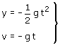
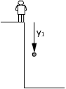
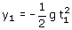
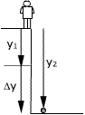
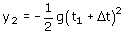
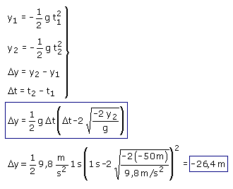

Este problema trata del recorrido parcial que realiza la piedra en el último segundo
Ecuaciones del movimiento:
|
|
 |
Parámetros: g = 9.8 m/s2 |

Aplicación: Comienza el recorrido parcial
Incógnitas: t1, y1
|  |
 |
Aplicación: Finaliza el recorrido parcial
Datos: y2 = -50 m, Incógnitas: t2
|  |
 |
El desplazamiento en el recorrido parcial es: Δy = y2 - y1
El intervalo de tiempo invertido en el recorrido es: Δt = t2 - t1 (Siendo Δt = 1 s)
Combinando las ecuaciones resulta un sistema con cuatro incógnitas: y1, t1, t2, Δy

En el último segundo la piedra cae 26.4 m